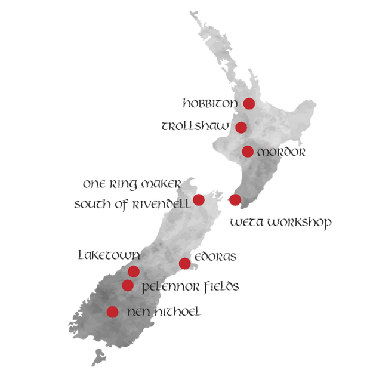

Lord of The Rings Filming Locations Visited
Our New Zealand Lord of the Rings tours include many movie locations such as Hobbiton and Mordor in The North Island, to Laketown and Edoras in the South Island. All of these beautiful places are instantly recognisable in real life.


